Guía de Onboarding — Bitácora GRM v2
Para usuarios finales del sistema. Esta guía explica paso a paso cómo usar Bitácora GRM para registrar, gestionar y resolver incidencias combinando la formalidad de un ITSM con la agilidad de un tablero Kanban.
01 ¿Qué es Bitácora GRM?
Bitácora GRM es una plataforma web de gestión de incidencias que combina dos enfoques:
- ITSM (gestión estricta): cada cambio de estado de un ticket se valida contra reglas de negocio, queda registrado en una auditoría inalterable y se mide contra Acuerdos de Nivel de Servicio (SLA).
- Kanban (visualización ágil): el tablero principal muestra los tickets como tarjetas que se arrastran entre columnas para cambiar su estado.
Todo funciona desde el navegador, sin instalar nada. La URL de acceso te la entrega
el equipo de soporte de tu organización (ej.: https://bitacora.tuempresa.com).
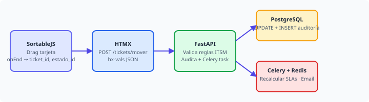
02 Tu primera vez: registrarse e iniciar sesión
2.1. Si tu cuenta ya existe
- Abre el navegador y entra a la URL del sistema.
- En la pantalla de Iniciar sesión escribe tu usuario o email y tu contraseña.
- Haz clic en Entrar. Quedas autenticado por 8 horas (luego te pedirá volver a iniciar sesión).
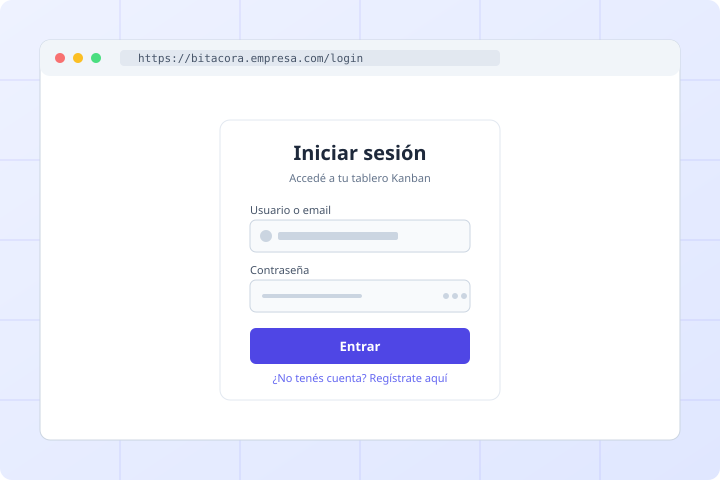
2.2. Si NO tienes cuenta aún
- En la pantalla de login, haz clic en el link "Regístrate aquí".
- Completa:
- Usuario (3–64 caracteres, sin espacios; ej.
jperez) - Email corporativo
- Nombre completo
- Contraseña (mínimo 6 caracteres, máximo 128)
- Confirmar contraseña
- Usuario (3–64 caracteres, sin espacios; ej.
- Haz clic en Registrarme. Tu cuenta queda creada con rol Solicitante por defecto; un Administrador la elevará de rol si corresponde.
- El sistema te autentica automáticamente y te redirige al tablero.
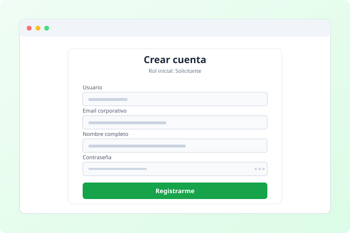
03 Cambiar tu contraseña
Recomendado hacerlo apenas ingreses por primera vez.
- En la barra superior, haz clic en el ícono de llave con el texto "Cambiar contraseña" (esquina superior derecha).
- En el modal que aparece, completa:
- Contraseña actual
- Nueva contraseña (6–128 caracteres, distinta de la actual)
- Confirmar nueva contraseña
- Haz clic en Actualizar contraseña.
- Al guardar, el modal se cierra y aparece un toast verde confirmando. Tu sesión sigue activa.
04 Conocer la interfaz principal
┌────────────────────────────────────────────────────────────────┐ │ Bitácora GRM Tablero Tickets Usuarios [Buscar ⌘K] │ │ ●Online Juan │ ├────────────────────────────────────────────────────────────────┤ │ [Filtros 1] [Archivados] [+ Nueva Inc.] │ ├────────────────────────────────────────────────────────────────┤ │ NUEVO ║ EN CURSO ║ EN ESPERA ║ RESUELTO ║ CERRADO │ │ (2) ║ (1) ║ (1) ║ (1) ║ (12) │ │ ┌─────┐ ║ ┌─────┐ ║ ┌─────┐ ║ ┌─────┐ ║ │ │ │Tarj.│ ║ │Tarj.│ ║ │Tarj.│ ║ │Tarj.│ ║ │ │ └─────┘ ║ └─────┘ ║ └─────┘ ║ └─────┘ ║ │ │ ┌─────┐ ║ ║ ║ ║ │ │ │Tarj.│ ║ ║ ║ ║ │ │ └─────┘ ║ ║ ║ ║ │ └────────────────────────────────────────────────────────────────┘
- Columnas: cada columna representa un estado del flujo de trabajo. El nombre, color y orden los define el Administrador.
- Tarjetas: cada tarjeta es un ticket (incidencia). Tiene un código (ej.
INC-0042), título, prioridad, asignado, etiquetas y un indicador de SLA.
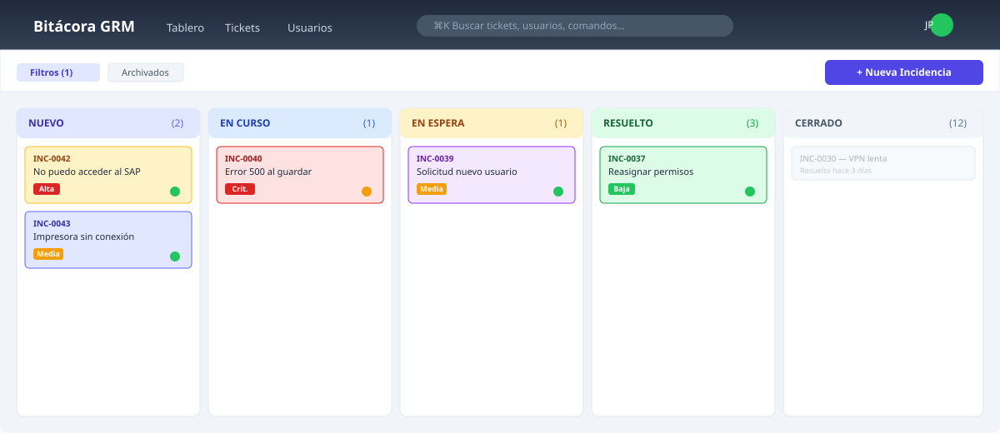
Indicador de SLA
Es la esquina inferior derecha de cada tarjeta:
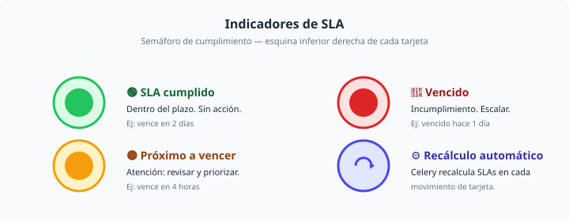
05 Crear una nueva incidencia
- Haz clic en el botón "+ Nueva Incidencia" (esquina superior derecha del tablero).
- Se abre un modal con un formulario. Completa:
- Título (obligatorio): resumen breve (ej. "No puedo acceder al sistema SAP").
- Descripción detallada: acepta Markdown — puedes usar
**negrita**,*itálica*,`código`,[link](url), listas y saltos de línea. - Tipo: Incidencia, Solicitud, Problema o Cambio.
- Prioridad: Crítica, Alta, Media o Baja.
- Fecha de vencimiento (SLA): opcional, deadline esperado.
- Adjuntos: arrastra archivos al cuadro punteado o haz clic en para seleccionar.
- Checklist inicial (opcional): items a verificar al trabajar el ticket.
- Haz clic en Crear Incidencia.
- El modal se cierra, aparece un toast verde y la tarjeta aparece en la primera columna del tablero (estado "Nuevo") sin recargar la página.
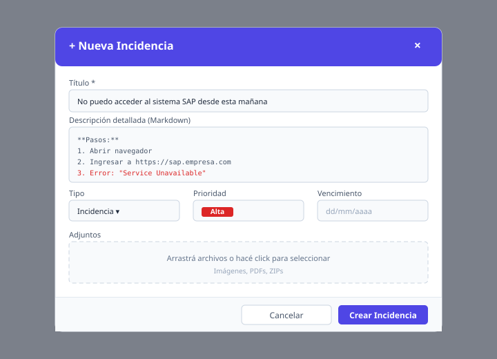
06 Ver y editar el detalle de un ticket
- Haz clic en cualquier parte de la tarjeta (o el ícono de ojo 👁 en su esquina).
- Se abre un modal con toda la información del ticket, organizada en secciones:
- Cabecera: código, título, prioridad, asignado, fecha de creación, fecha de vencimiento.
- Descripción (Markdown renderizado).
- Comentarios (en orden cronológico).
- Checklist (items a marcar / desmarcar).
- Adjuntos (imágenes con preview ampliable, archivos descargables).
- Etiquetas (colores).
- Historial (auditoría de cambios).
- Para editar un campo en línea: haz clic en el valor (ej. la prioridad) y elige otro. El cambio se guarda automáticamente (HTMX) y aparece un toast confirmando.
- Para agregar un comentario: escribe en el cuadro "Escribir un comentario…" (admite Markdown) y haz clic en Enviar.
- Para subir un adjunto: arrastra un archivo al cuadro de dropzone, o haz clic en para elegir. Las imágenes se previsualizan y se pueden ampliar cliqueando (lightbox).
- Para cerrar el modal: clic en la X, en el fondo oscuro, o tecla Esc.
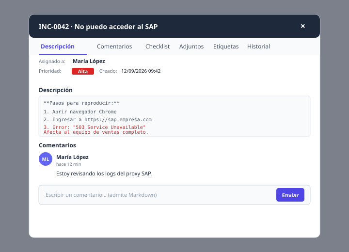
07 Mover un ticket entre columnas (cambiar su estado)
Esta es la acción principal del flujo Kanban.
- Haz clic y mantén presionada una tarjeta.
- Arrastra la tarjeta a otra columna y suéltala encima.
- Si la transición de estado es válida para tu rol:
- El backend valida, actualiza el ticket, registra en auditoría y devuelve el HTML actualizado.
- La tarjeta aparece en la nueva columna sin recargar la página.
- Toast verde: "Ticket movido".
- Si la transición no está permitida para tu rol o el estado de origen/destino no existe en la matriz de transiciones:
- La tarjeta vuelve sola a su columna original (rollback visual de SortableJS).
- Toast rojo: "No tienes permisos para esta transición" o mensaje específico.
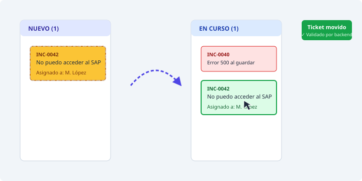
- Si el cambio de estado exige un comentario (ej. "Cancelar" o "Reabrir"), el modal te lo pedirá antes de confirmar.
- Cada movimiento queda asentado en la pestaña Historial del ticket con timestamp y usuario que lo hizo.
08 Filtrar el tablero
El tablero puede tener cientos de tarjetas. Para encontrar lo que buscas:
- Haz clic en "Filtros" en la barra superior (esquina izquierda del tablero). Aparece un panel plegable.
- Puedes combinar:
- Búsqueda por texto (título, código o descripción).
- Prioridad (Crítica / Alta / Media / Baja).
- Asignado (un agente específico).
- Etiqueta (un color / categoría).
- Solo mis tickets (casilla) → filtra a los asignados a ti.
- Solo críticos (casilla).
- El contador en el chip "Filtros N" muestra cuántos filtros tienes activos.
- Haz clic en Limpiar para borrar todos los filtros.
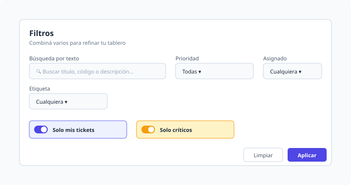
09 Tickets archivados
Los tickets cerrados (o cancelados) se mueven al archivo:
- Haz clic en "Archivados" en la barra superior.
- Se abre un modal con todos los tickets archivados.
- Desde ahí puedes buscar, filtrar y reabrir un ticket si necesitas volver a trabajarlo.
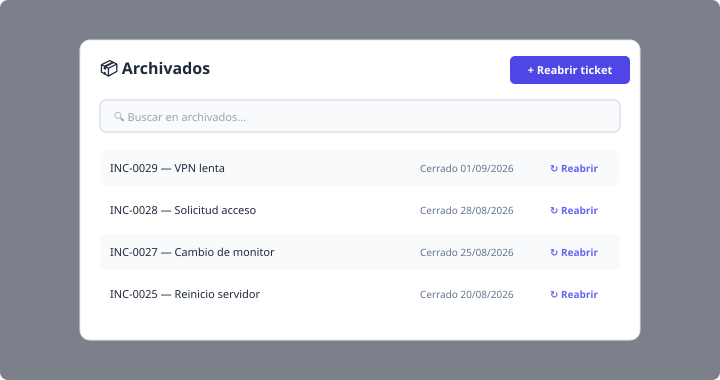
10 Búsqueda global (atajo ⌘K / Ctrl+K)
- Haz clic en el cuadro "Buscar…" en la barra superior, o presiona Ctrl+K (Windows/Linux) o ⌘+K (Mac).
- Se abre un Command Palette: empieza a escribir.
- La búsqueda recorre: tickets (código / título / descripción), usuarios (solo si sos admin) y comandos rápidos (ej. "crear ticket", "ir a usuarios").
- Navega con ↑/↓ y presiona Enter para abrir el resultado.
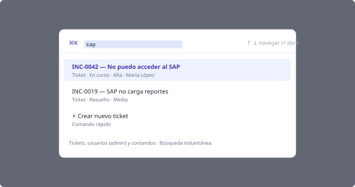
11 Roles y permisos
El sistema tiene 5 roles con permisos crecientes:
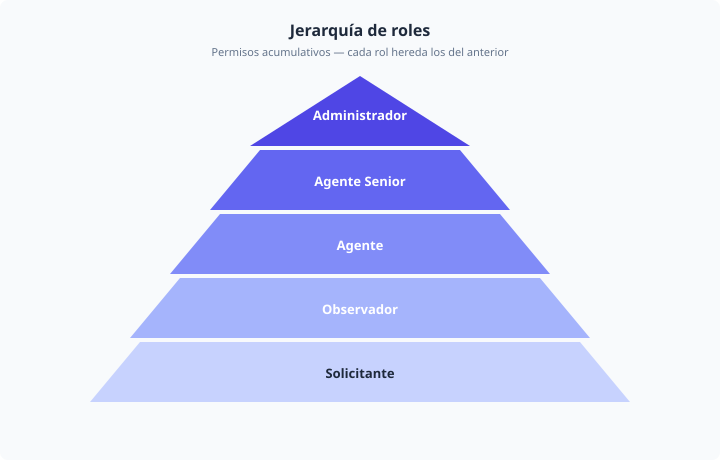
| Rol | Puede | No puede |
|---|---|---|
| Solicitante | Crear tickets, comentar en los suyos, agregar adjuntos. | Cambiar estado, asignar, cerrar tickets ajenos, ver tablero global. |
| Observador | Ver el tablero y la auditoría en modo lectura. | Crear, editar, comentar o mover nada. |
| Agente | Atender tickets asignados: cambiar estado, comentar, adjuntar, marcar checklist. | Reasignar, cerrar tickets no asignados, ver auditoría global. |
| Agente Senior | Todo lo anterior + reasignar, cerrar tickets, editar la mayoría de campos. | Gestionar usuarios ni crear columnas. |
| Administrador | Acceso total: gestionar usuarios, columnas, catálogos, ver toda la auditoría y reportes. | — |
12 Si eres Administrador: tareas adicionales
12.1. Crear / editar usuarios
- En la barra superior, haz clic en "Usuarios" (solo visible para administradores).
- Acciones por fila:
- ✉️ Email: previsualizar y enviar credenciales por correo al usuario (genera una contraseña provisoria aleatoria).
- ✏️ Editar: cambiar nombre, email, departamento, rol o estado activo/inactivo.
- 🔑 Cambiar contraseña: resetear la contraseña de otro usuario (vos defines el valor; no necesitas conocer la actual).
- 🟢/🔴 Activar / Desactivar: soft-delete del usuario.
- Crear un usuario nuevo: haz clic en "+ Nuevo Usuario", completa el formulario y haz clic en Crear.
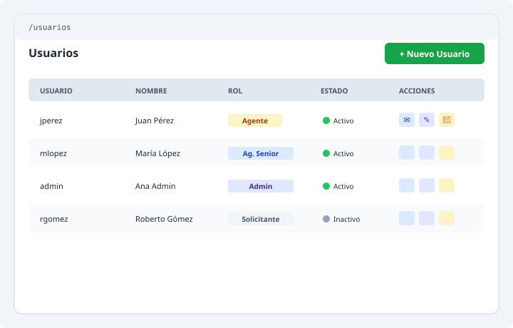
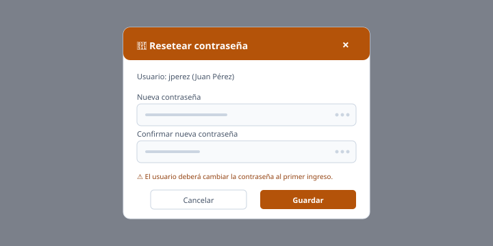
12.2. Gestionar el flujo (columnas)
- En el tablero, haz clic en el botón "+ Añadir columna" (esquina derecha). Completa nombre y color.
- Para renombrar una columna: clic en el título o en el ícono de lápiz.
- Para asignar un responsable a una columna: clic en "responsable" dentro del header; elige un agente. A partir de ese momento, todos los tickets que caigan en esa columna disparan un email automático al responsable.
- Para reordenar columnas: arrastra horizontalmente por el body de la columna. El nuevo orden se guarda automáticamente. Si la API falla, el tablero se recarga para volver al estado real de la BD.
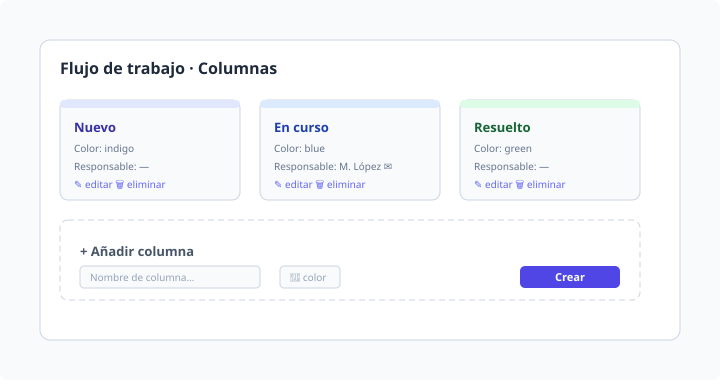
12.3. Eliminar / desactivar una columna
12.4. Ver la auditoría
La auditoría está disponible en cada ticket (pestaña "Historial"). Cada cambio registra: timestamp, usuario, acción, valor anterior y valor nuevo.
↑ Volver arriba13 Cerrar sesión
- Haz clic en "Salir" (esquina superior derecha).
- El sistema invalida tu sesión y te redirige a la pantalla de login.
14 Atajos de teclado útiles
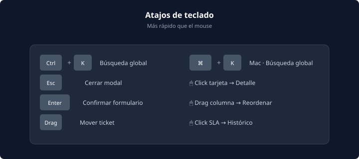
| Atajo | Acción |
|---|---|
| Ctrl + K / ⌘ + K | Abre la búsqueda global |
| Esc | Cierra cualquier modal abierto |
| Enter en un input | Confirma el formulario del modal |
| Click + arrastrar en tarjeta | Mueve el ticket a otra columna |
| Click + arrastrar en columna (admin) | Reordena columnas |
| Click en tarjeta | Abre el detalle |
15 Errores frecuentes y cómo resolverlos
| Síntoma | Causa probable | Qué hacer |
|---|---|---|
| Toast rojo "No tienes permisos para realizar esta acción" | Tu rol no permite esa acción | Pide a un administrador que te otorgue el rol correspondiente |
| Toast rojo "La transición no es válida" | El estado destino no es alcanzable desde el estado actual para tu rol | Consulta la matriz de transiciones del flujo con tu admin |
| La tarjeta vuelve a su columna original al soltarla | La transición fue rechazada por el backend | Revisa el toast para ver el motivo exacto |
| "Sesión expirada — Recarga la página" | Pasaron 8 horas sin actividad | Recarga la página y vuelve a iniciar sesión |
| La pantalla se queda en "Cargando…" | Fallo de red transitorio | Espera unos segundos; si persiste, recarga |
| Las imágenes de los adjuntos no se ven | Tu navegador bloqueó el lightbox (cookies/storage) | Habilita almacenamiento local para el dominio |
| No puedes crear columnas / usuarios | No sos Administrador | Pide a un Admin que haga el cambio, o solicita elevación de rol |
16 Buenas prácticas
- Título claro y específico: evita "Ayuda" o "No anda"; prefiere "Error 500 al guardar pedido en módulo ventas".
- Descripción reproducible: incluye pasos para reproducir el problema, mensajes de error textuales, capturas y URLs afectadas.
- Prioridad correcta: Crítica = negocio detenido. Alta = bloqueo importante. Media = afecta pero hay workaround. Baja = mejora o consulta.
- Asignación temprana: si sabes quién debe resolver, asigna directamente al soltarlo en su columna.
- Comentarios contextuales: cada vez que avances en el ticket, deja un comentario (incluso para "sigo investigando"). Eso permite a tu equipo y al solicitante ver el avance.
- Checklist para tareas complejas: si el ticket tiene varios pasos, usa el checklist. Cada ítem es una subtarea clara.
- Cierra tickets cuando corresponda: un ticket "resuelto" sin cerrar termina ocupando capacidad del tablero.
17 Glosario
| Término | Definición |
|---|---|
| Ticket / Incidencia | Unidad de trabajo. Representa un problema, solicitud, cambio o problema conocido. |
| Estado | Columna del Kanban. Define en qué fase está el ticket. |
| Prioridad | Urgencia del ticket (Crítica / Alta / Media / Baja). |
| SLA | Service Level Agreement — tiempo objetivo de resolución. Si vence, el indicador se pone rojo. |
| Asignado | Agente responsable de resolver el ticket. |
| Solicitante | Quien reporta la incidencia. |
| Auditoría | Registro inalterable de todos los cambios (quién, cuándo, qué). |
| Columna con responsable | Cada vez que un ticket cae en esa columna, se notifica por email al responsable. |
| Archivado | Ticket cerrado que ya no aparece en el tablero principal. |
| Command Palette | Buscador global (⌘+K / Ctrl+K). |
18 Soporte y contacto
- Soporte de primer nivel: equipo de Mesa de Ayuda de tu organización.
- Errores del sistema / solicitudes de mejora: crear un ticket en Bitácora GRM con prioridad "Media" o "Baja".
- Problemas críticos del propio sistema: contacta directamente al equipo de desarrollo (ver README en GitHub).
Hecho con FastAPI · PostgreSQL · Redis/Celery · HTMX.